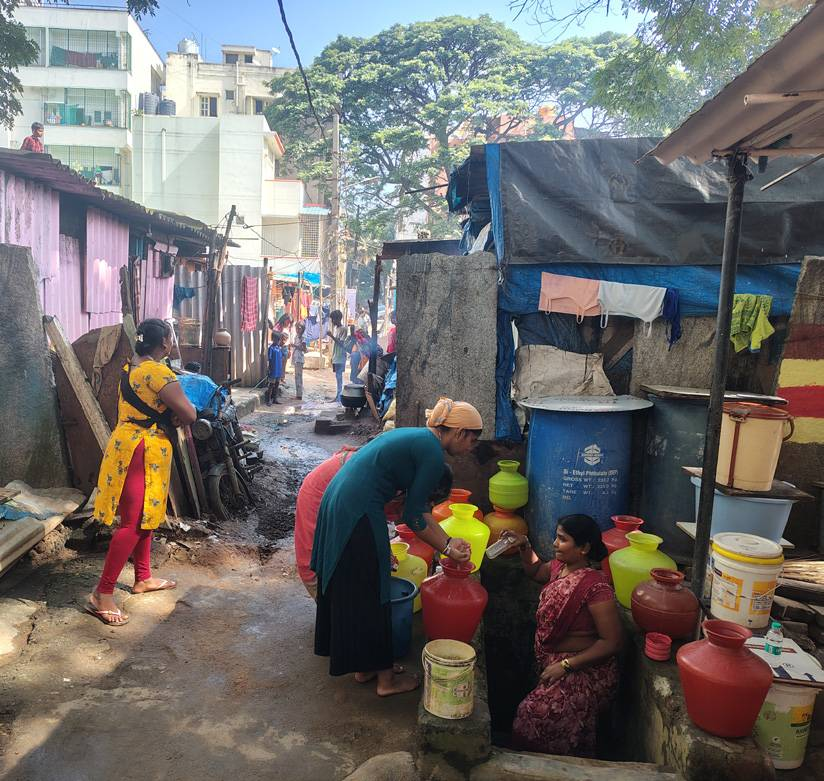
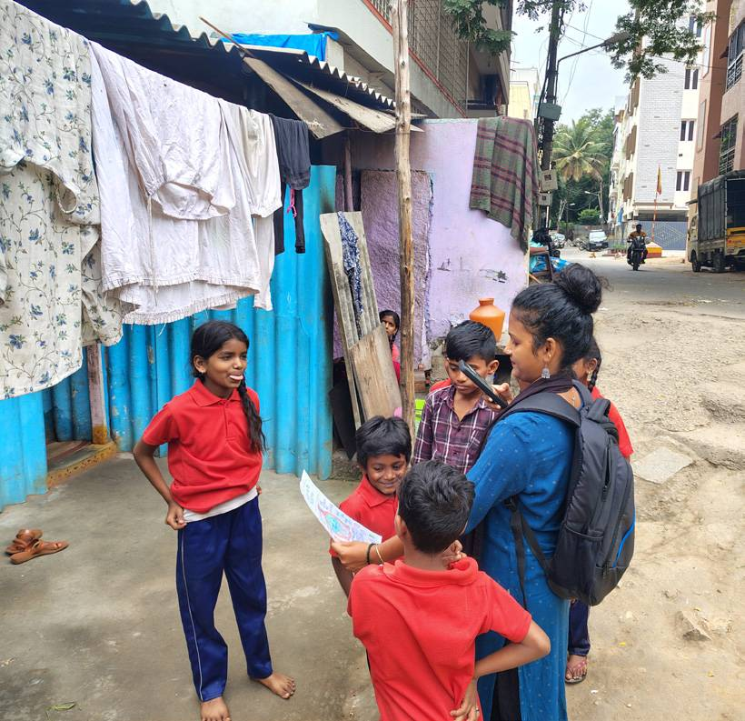

1
From fringes to the core
Bringing the concerns of the marginalised to the front line of climate action by foregrounding evidence
The network has made a compelling case for bottom-up approaches so that excluded communities are acknowledged, represented and involved in localising climate action. BCAP recognised the disproportionate impact of climate change on vulnerable communities and highlighted the importance of hyperlocal evidence in shaping local action.
- Nagara Pravaha study
- Ward Factsheets
- Extreme weather and migrant communities

